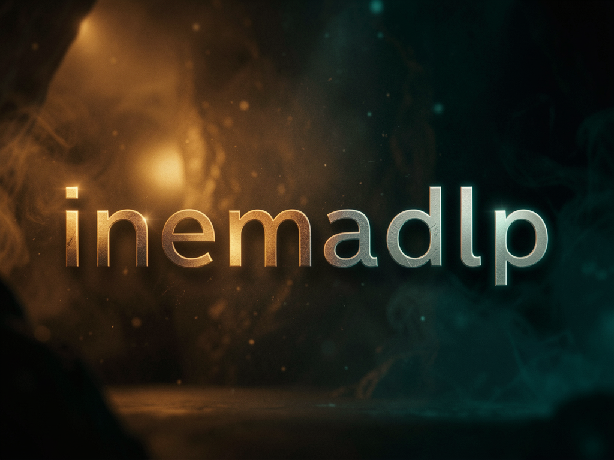

Um downloader de vídeo e áudio que roda na sua própria máquina, protegido por senha, com o arquivo se apagando sozinho depois de 6 horas.

Você abre uma página na sua VPS, cola a URL, escolhe vídeo ou áudio e recebe o arquivo. Por baixo é o yt-dlp de sempre — a diferença é não precisar de terminal, e o download sair de um IP residencial de confiança em vez do seu celular.
A interface é uma PWA: instala na tela de início, entra uma vez com a senha e nunca mais pede login. Nada de app, nada de loja.
Todo arquivo baixado é apagado 6 horas depois, e uma varredura recolhe também as sobras de downloads que falharam. A VPS não vira depósito.
Você envia os cookies do seu navegador logado pela própria interface. É o que evita o "Sign in to confirm you're not a bot" que barra IPs de datacenter.
Um processo só: FastAPI serve a interface e a API, e um worker consome a fila um job por vez — de propósito, para não levar rate-limit da fonte. O Caddy cuida do HTTPS.
A fila é serial. Dois downloads simultâneos só aumentariam a chance de bloqueio na origem.
Falhou, você reenfileira. Retentar sozinho contra uma fonte que bloqueou só queima o IP mais rápido.
A entrega suporta Range, então uma queda de sinal no celular continua de onde parou — por isso o TTL, e não apagar no primeiro download.
Uma VPS Linux com Docker e um subdomínio apontado para ela. Mais nada — ffmpeg e yt-dlp vêm dentro da imagem.
É o único requisito de software na VPS.
# Ubuntu curl -fsSL https://get.docker.com | sh
Aponte um registro A para o IP da VPS antes de subir: o Caddy emite o certificado no primeiro acesso.
# exemplo dlp.seudominio A 203.0.113.10
No PC ou no celular, logado nas fontes de onde você baixa. É de lá que saem os cookies.
# extensão (Edge/Chrome) Get cookies.txt LOCALLY
São cinco passos. Do terceiro em diante você já está usando pelo celular.
O .env guarda a senha e as chaves. Ele nunca vai para o git.
git clone https://github.com/inematds/inemadlp.git && cd inemadlp cp .env.example .env # gere a senha e as duas chaves (uma linha cada) python3 -c "import secrets; print(secrets.token_urlsafe(24))" # DLP_PASSWORD python3 -c "import secrets; print(secrets.token_urlsafe(32))" # DLP_SECRET_KEY python3 -c "import secrets; print(secrets.token_urlsafe(32))" # DLP_UPLOAD_TOKEN
Preencha o .env com os valores acima e o seu domínio, proteja o arquivo e suba. O HTTPS é automático.
echo "DLP_DOMAIN=dlp.seudominio" >> .env chmod 600 .env docker compose up --build -d # Caddy emite o certificado sozinho
Abra o domínio, entre com a senha e use "Adicionar à tela de início". A sessão não expira — você loga uma vez e pronto.
# no navegador do celular https://dlp.seudominio
Logado na fonte, exporte com a extensão Get cookies.txt LOCALLY e mande o arquivo no painel Cookies da própria interface. Funciona do Windows, do Linux e do celular.
# atalho, só na máquina Linux com Firefox logado DLP_URL=https://dlp.seudominio DLP_UPLOAD_TOKEN=... ./sync-cookies.sh # -> {"cookies": 81}
Cole a URL, escolha Vídeo (MP4 até 1080p) ou Áudio (M4A) e aguarde. O progresso aparece na lista e o botão "Baixar" surge no fim.
# o arquivo fica disponível por 6 horas, então some # quer mais tempo? DLP_TTL_HOURS no .env
A v1 está completa e verificada ponta a ponta. O que não está aqui foi cortado de propósito — é ferramenta pessoal, não produto.